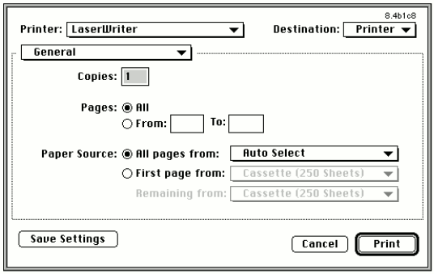

By the time you read this, version 8.4 of the LaserWriter 8 printer driver will have
shipped. This driver -- LaserWriter version 8.4, for short -- is not the same old
LaserWriter driver: it has new features that developers have been asking for, sports a
new user interface, and beats earlier versions of the driver in the quarter mile.
Here I'll outline some of the changes -- a few minor, a few major -- that you need to
be aware of for compatibility reasons. Even if you don't want to take advantage of any of
the great new features, you'll at least need to address compatibility issues if any of the
changes cause problems with your application.
To help you implement the new features, this column is backed up with detailed
documentation on this issue's CD.
The 120-byte print record in the previous driver version doesn't have as many free
bits available as some programmers would like. So to let you save all possible printing
information about a document, Apple decided to allow for extensible print records.
If all you want to do is maintain compatibility with the new driver version, you
shouldn't need to change your application at all. But if you want to take advantage of the
extended print record -- and implement attractive features such as access to a larger
number of paper sizes, tray handling that works with the PrJobMerge function, and
the ability to reliably save more user settings from the Page Setup dialog -- you do
need to make some minor changes, along the following lines:
Those who break the rules might need to make more changes. See the Print Hints
column in develop Issue 26 ("The Top 10 Printing Crimes Revisited") for more
information.
LaserWriter version 8.4 adds three new PrGeneral opcodes for dealing with the
extended print record: kExtendPrintRecOp (which extends the print record),
kGetExtendedPrintRecOp, and kSetExtendedPrintRecOp.
Table 1 gives a complete list of all the PrGeneral opcodes as of June 1996 (but be
aware that printing in Mac OS 8 might not implement all of these). These opcodes are
all planned to be supported by LaserWriter version 8.4, except for the ones that aren't
used by LaserWriter 8 (as noted in the table). Refer to the article "Meet PrGeneral"
in develop Issue 3 for more information about PrGeneral.
Table 1. The PrGeneral opcodes
| Opcode | Operation |
| 4 | getRslDataOp |
| 5 | setRslOp |
| 6 | draftBitsOp |
| 7 | noDraftBitsOp |
| 8 | getRotnOp |
| 9 | NoGrayScl (not used by LaserWriter 8) |
| 10 | getPSInfoOp |
| 11 | PSIntentionsOp |
| 12 | enableColorMatchingOp |
| 13 | registerProfileOp (ColorSync 1 only; not used by LaserWriter 8) |
| 14 | PSAdobeOp |
| 15 | PSPrimaryPPDOp |
| 16 | kLoadCommProcsOp |
| 17 | kUnloadCommProcsOp |
| 18 | kExtendPrintRecOp (LaserWriter version 8.4 and later only) |
| 19 | kGetExtendedPrintRecOp (LaserWriter version 8.4 and later only) |
| 20 | kPrinterDirectOpCode (not used by any LaserWriter driver) |
| 21 | kSetExtendedPrintRecOp (LaserWriter version 8.4 and later only) |
The print dialogs have been completely redesigned for LaserWriter version 8.4.
Applications that use the approved method of extending the print dialogs will continue
to function. But if your application uses a nonstandard method of extending the print
dialogs, it's in trouble. The definitive source about how to extend a print dialog is
PDlog Expand, available as sample code on this issue's CD and included with the
Macintosh Technical Note "Print Dialogs: Adding Items" (PR 09).
The new print dialogs have a pop-up menu that lets the user select between multiple
panes of the dialog. In Figure 1, the General pane has been selected from the pop-up
menu. When an application adds items to the print dialog, they're added to a pane that
has the name of the application. Because of this new multipane dialog, applications that
extend the print dialogs in a nonstandard manner will cause many problems, such as
dialog items appearing in the wrong locations, standard items being overwritten
within the dialog, and standard items being drawn incorrectly.

Figure 1. The new multipane print dialog
Applications also shouldn't assume that the print dialog's foreground color is black or
that the background color is white. Furthermore, when applications exit their CDEFs
or user items, they should be careful to leave the foreground and background colors as
they found them. Other items in the dialog rely on these colors, so if you change them
the standard controls in the print dialog could take on unusual colors.
With LaserWriter version 8.4, when background printing is disabled, printing is
one-pass. This means that there are no longer any big spool files to fill up your hard
drive, and the first printed page comes out of the printer more quickly (because it
doesn't have to wait for the entire document to spool). The downside is that because the
LaserWriter driver isn't making two passes over the data to be printed, it might not be
able to perform the same optimizations on the PostScript(TM) code as when
background printing is enabled.
As a result, jobs printed with background printing disabled might print more slowly,
and in a few cases the final quality could suffer. With the advent of one-pass printing,
if your application has its own PostScript LaserPrep dictionary, it should use the
PREC 103 mechanism for this dictionary. With this mechanism, the driver downloads
to the printer the PostScript dictionary contained in the PREC 103 resource before
it's needed by application-generated PostScript code. If the application doesn't do this
and defines its own PostScript procedures at the page level, these procedures will be
undefined as part of the one-pass font-handling mechanism and you'll get PostScript
errors (mostly undefined operators, because the operators you defined aren't there).
Some of the functionality of LaserWriter version 8.4 has been broken out into shared
libraries, including the following:
In the future, Apple may provide APIs to these shared libraries for third parties.
If you're a printer developer, you should know that the way PPD files are parsed and
handled has changed in LaserWriter version 8.4. Previous versions of the driver
would supply a "Printer's Default" choice so that the user could choose not to decide
about a certain feature and accept the default setting of the printer. With version 8.4,
the driver will no longer provide this option. If PPD creators want to continue to have
a Printer's Default option for a user interface feature (called UIFeature in the PPD
specification), they'll have to add it to the PPD file in the list of options for that
feature.
Also, common features available through the PPD file will be added to the correct
pane of the print dialog. Features that aren't recognized or that are vendor-specific
will be placed in their own pane. This can cause problems: if you use a nonstandard
naming convention for a common feature, it will be placed with all other unknown
features, and if you use a standard name for a nonstandard feature, it will probably end
up in the wrong location.
One other change is that you can specify the graphic elements you'd like to use for UI
features specified within the PPD file. See "LaserWriter 8.4 PPDs" on the CD for
information about how to design your own pane for use with LaserWriter version 8.4.
The latest Apple PPD files are the best examples of how to implement the new features.
LaserWriter 8 introduced a number of new error codes, but they haven't been
documented -- until now, that is. See the unofficial documentation "LaserWriter 8
Errors" on the CD. Future versions of this document will be released as Technotes.
These error codes are provided for debugging purposes. Be aware that they may change
in the future, so you probably don't want your application to depend on them.
That's a quick rundown of the new features of the newest version of the LaserWriter
driver. These features should make printing a better experience for the user, should
give the developer more flexibility, and should require no changes to most
applications. And to top it all off, they're cool!
RELATED READING
DAVE POLASCHEK (dpolasch@apple.com) continues to be confused by California.
There's nice weather when it isn't baseball season, the earth moves even when he's
alone, and it's easier to find good wine than good beer. Dave works in Developer
Technical Support (DTS) at Apple. If you'd like more details, look
athttp://www.best.com/~davep/.*